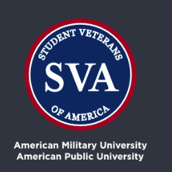

🚨 Click the Links & Resources button on the bottom right of every page for crucial care, support, resources, AMU-APUS SVA chapter announcements, and more! 🚨
🚨 Click the Links & Resources button on the bottom right of every page for crucial care, support, resources, AMU-APUS SVA chapter announcements, and more! 🚨
The AMU Student Veterans of America Chapter provides essential leadership and support for active duty, transitioning service members, and AMU APUS students. We foster a strong community that helps veterans adjust to academic life, providing mentorship, resources, and a supportive environment. Our chapter serves as a vital connection for veterans, offering leadership opportunities, advocacy for student veterans' needs, and guidance for navigating academic challenges.

AMU/APU SVA Chapter Leadership & Support offers comprehensive support for veterans in navigating the GI Bill, other benefits, and educational resources. Our team collaborates with veterans to ensure they fully understand and access the educational opportunities available to them. From application assistance to ensuring benefits are used effectively, AMU SVA guides veterans through the complexities of educational funding and resources.

AMU/APU SVA Chapter Leadership & Support works closely with the VA and other health services to ensure veterans receive the care and resources they need to succeed both academically and personally. We offer support for accessing VA health services, including mental health resources and physical health programs, ensuring that veterans’ well-being is prioritized. Our meetings and collaborations with the veteran community provide a platform for discussing issues, sharing resources, and planning initiatives that support veterans.